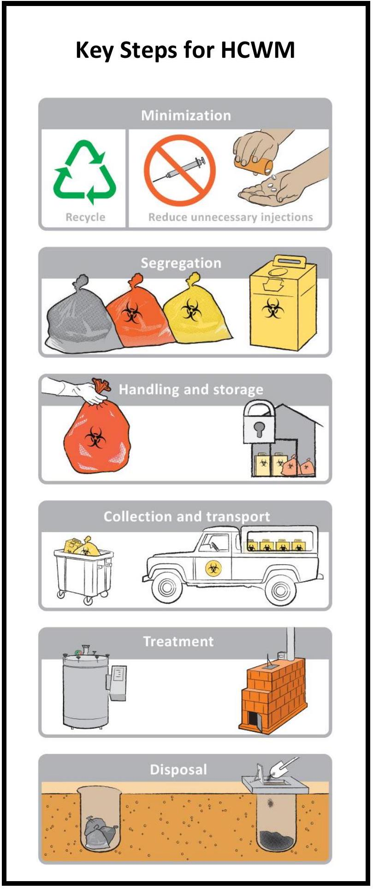
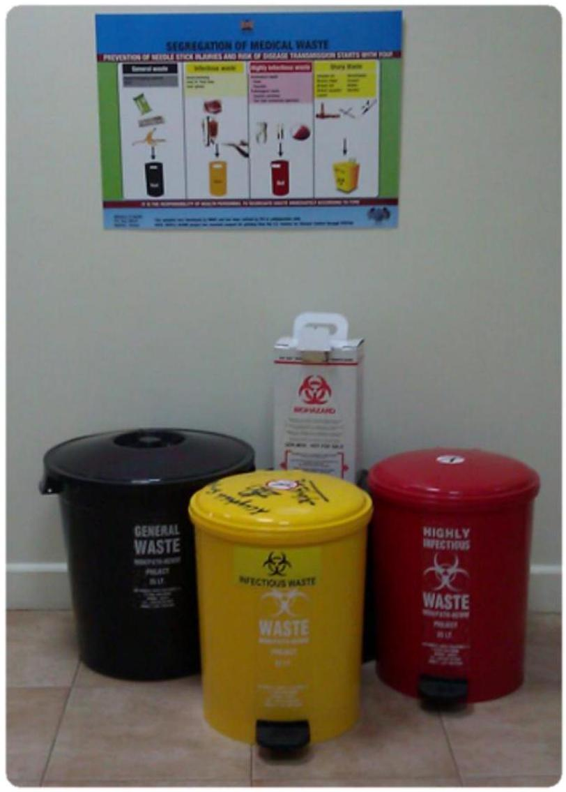

Health care waste management overview
Definition of health care waste
Health care waste (HCW) is the total waste stream generated from health care facilities including hospitals, research centres, and laboratories.
HCWM is the classification, collection, transportation, treatment, and disposal of waste including the supervision of such operations and aftercare of disposal to ensure it doesn't cause harm/ injury to persons.
Importance of health care waste management
- To minimize the effect of waste on public health, such as disease transmission (e.g., HIV/AIDS, hepatitis B, and hepatitis C) and injuries caused by sharps.
- To prevent risks and hazards to waste-handling staff.
- To reduce the environmental impact caused by pollution resulting from improper disposal of waste, including contamination of grounds, water, and air.
- To reduce the costs resulting from waste handling.
- To facilitate resource recovery of useful products (reduce, reuse, recycle).
- To prevent and control breeding of insects, rodents, and other pests.
- To reduce nuisances (e.g., smell, unsightliness).
- To prevent animal and human scavenging.
- To improve on aesthetics and ensure the hospital is a beautiful environment.
Categorization of health care waste
The National Guidelines for Safe Management of Health Care Waste includes the following categories of waste:
- Infectious waste (e.g., tissues, materials, or equipment that have been in contact with blood or other body fluids).
- Pathological waste (e.g., tissues, organs, body parts, blood, infected animals from laboratories, and body fluids).
- Sharps (e.g., needles, hypodermic needles, scalpels, and other blades, knives, infusion sets, saws, and broken glass).
- Pharmaceutical waste (e.g., expired, spilt, and contaminated pharmaceutical products, discarded bottles or boxes with residues, and drug vials).
- Radioactive waste includes solid, liquid, and gaseous materials contaminated with radionuclide.
- Genotoxic/cytotoxic waste may include certain cytotoxic drugs often used in cancer therapy, vomit, urine or feces from patients treated with cytotoxic drugs, chemicals, and radioactive material.
- Chemical waste consists of discarded solid, liquid, and gaseous chemicals (e.g., from diagnostic and experimental work and from cleaning, housekeeping, and disinfecting procedures).
Waste with heavy metal content includes waste containing mercury, cadmium, lead, and drugs containing arsenic, among others.
- Non-infectious/general waste includes waste generated from offices, kitchens, packaging material, and from stores. It is similar to domestic waste.
- Other wastes generated from health care settings include:
- Electronic waste.
- Construction waste.
- Obsolete equipment/furniture.
Principles of health care waste management
The general principles to be followed for HCWM are:
- The "Duty of Care" principle: stipulates that any person handling or managing hazardous substances or related equipment is ethically responsible for using the utmost care in that task.
- The "Proximity" principle: recommends that treatment and disposal of waste should take place at the closest possible location to its source in order to minimize risks linked to the transport of waste.
- The "Precautionary" principle: governs health and safety protection. When the magnitude of a particular risk is uncertain, it should be assumed that this risk is significant, and measures to protect health and safety should be designed accordingly.
- The "Polluter Pays" principle: implies that all producers of waste are responsible for the safe and environmentally sound disposal of the waste they produce.
Summary of key steps in health care waste management
Minimization: Refers to approaches adopted by the health facility to reduce the amount of HCW generated during delivery of services. It includes strategies to reduce unnecessary injections, as well as to recycle or reuse some of the materials.
Segregation: Refers to placing HCW into separate containers according to type: noninfectious or general waste, infectious, highly infectious, and sharps waste.
Handling and storage: Refers to steps taken to manage waste during containment and storage whilst waiting for collection or transportation to a treatment plant or disposal site.
Collection and transport: Refers to an organized system for removing waste from the point of generation or temporary storage to a treatment or disposal site. Waste may be transported within the health facility or to an offsite treatment plant and disposal site.
Disposal: Refers to the final discharge of waste and residues or by-product from the treatment of waste. Some of the common methods of disposal are:
- Municipal landfills: this is a designated site for disposal of municipal waste in a controlled manner to minimize pollution to ground water, land, and air.
- Burial in pits: for example, infectious waste pit, placenta pits, ash pit.
*Please note that incineration is not a disposal method because the ash residue then has to be disposed of either in a protected ash pit or municipal landfill.
Minimization of health care waste
Waste minimization is the prevention of waste production and/or its reduction. Health care service providers and facility administrators can play an important role in the reduction of waste volume. Waste minimization is directly proportional to waste management costs and related risks.
How to minimize waste
Health facilities can adopt many policies, facility guidelines, and practices that may reduce their waste volume. Some policies include:
- Source reduction-purchasing and supplying materials which are less wasteful and/ or generate less medical waste.
- Stock management-frequent auditing; use of the oldest stock first and checking the expiry date of products during receiving and issuing of commodities.
- Encouraging the use of recyclable products-using materials that can be recycled both off- and onsite.
- Centralized purchasing, supply and monitoring of medical goods-reducing the costs and waste.
- Segregation of waste at the point of generation - sorting the waste into different categories, helping to minimize the quantities of hazardous waste.
- Reducing the number of unnecessary injections-increased use of oral medication instead of injectable.
Segregation of health care waste
Segregation refers to placing HCW into separate containers according to type or categories e.g. non- infectious or general waste, infectious, highly infectious, and sharps waste).
Why segregate waste?
The segregation of waste has the following advantages:
- Facilitates the safe handling of the waste.
- Separates recyclable waste from hazardous waste.
- Ensures that the waste will be treated according to its hazards.
- Reduces the overall cost of waste management, including transport, treatment, and disposal.
Segregation categories
Health care workers should segregate HCW immediately at the point of generation according to the type of waste. The national HCW segregation chart has the following categories:
- General or noninfectious waste.
- Infectious waste.
- Highly infectious or anatomical/pathological waste.
- Sharps waste.
Individual health facilities may include other categories in addition to the above, such as food remains, bottles, etc. This can promote recycling or reuse of materials that may have potential value for resale.
| Category | Examples | Colour of Bin and Liner | Marking |
|---|---|---|---|
| General or noninfectious | Paper, packaging materials, plastic bottles, food, cartons | Black | No recommended marking |
| Infectious | Gloves, dressings, blood, body fluids, used specimen containers | Yellow |  |
| Highly infectious or anatomical/ pathological | Laboratory specimens and containers with biological agents, anatomical waste, pathological waste | Red |  |
| Chemical | Formaldehyde, batteries, photographic chemicals, solvents, organic chemicals, inorganic chemicals | Brown | Marking will vary with classification of the chemical |
| Radioactive | Any solid, liquid, or pathological waste contaminated with radioactive isotopes of any kind | Yellow | Radioactive symbol |
| Genotoxic/ Cytotoxic | All drug administrative equipment (e.g., needles, syringes, drip sets), gowns and bodily fluid/waste from patients undergoing cytotoxic drug therapy | Purple |  |
Sharps waste management
Sharp waste must be immediately contained after use in order to prevent injury.
- The primary way to contain sharps is by using safety boxes and needle removers when available in the health facility.
- A safety box is a puncture- and leak-resistant container for disposal of sharps.
Why use a safety box?
Sharps can cut or puncture the skin, and, if they are contaminated, they can cause infections or diseases, including hepatitis B , hepatitis C , and HIV. If not properly disposed of, scavengers may also collect and reuse sharps waste. Reusing syringes and needles results in high risk of infection or disease transmission.
Tips on how to use a safety box
- Follow assembly instructions printed on the box.
- Keep safety box within arm's reach at each place where injections are given.
- Remove cannula/needle from IV set and place sharp in safety box.
- Dispose of the used syringe into the small opening in the safety box immediately after use.
- Do not recap and do not collect syringes for later disposal.
- Fingers should never be placed inside the box.
- Close the flap on the small opening of the box when it is three-quarters full. Do not overfill.
- Fill safety box only once and then destroy.
What goes in a safety box?
- Syringes with needles.
- Syringes with needles removed (if using a needle remover).
- Infusion needles.
- Cannula.
- Suture needles.
- Scalpels.
- Blades.
- Broken ampoule.
- Other categories of sharps and cannulas should be disposed of in specially designed sharps containers. These include:
- Chest tube introducers.
- Biopsy needle.
- Central line introducer.
- Cord clumps.
- Fistula needles.
Handling and storage of health care waste
Handling of health care waste
Handling is the process of packing and moving waste materials at the points of generation. It is done by generators and handlers of waste as it entails holding pieces of waste in bins located near the points of waste generation
In general, the following measures should be taken when handling HCW:
- Health workers handling waste must wear appropriate personal protective equipment (PPE) when handling waste.
- Sharps must always be placed in injection safety boxes and never be placed in waste bags.
- Waste must be contained in colour-coded and well-labelled plastic bags.
- Waste bags must not be overfilled (fill to approximately three-quarters of capacity).
- The volume of waste bag should not exceed 55 litres.
- At the point of waste generation, excess air should be expelled from the bag without compacting the contents, prior to closure using a bag tie.
- All bags should be held away from the body by the closed top of the bag, and placed directly into a mobile garbage bin or trolley.
- Where waste bags are sealed and stored pending collection, they should be in a secure place with restricted access.
- A waste collection schedule should be in place.
Storage of health care waste
Storage is the temporary containment of waste in a secured area before collection for treatment and/or disposal. Storage requirements must meet the criteria set by technically trained personnel.
- The storage time must not exceed 24 hours.
- Any storage of waste, including sharps, before treatment or collection for offsite disposal should be in a secure location designated for the purpose.
Recommendations for the transfer station/storage area and its equipment:
- There should be a water supply for cleaning purposes.
- The area should be clearly demarcated and have a sign warning trespassers.
- The storage area should have impermeable, hard-standing floor with good drainage; it should be easy to clean and disinfect.
- The storage area should afford easy access for staff in charge of handling waste.
- It should be possible to lock the storage area to prevent access by unauthorized persons.
- Easy access is required for waste-collection vehicles.
- The area should have protection from the sun.
- The storage area should be inaccessible to animals, insects, and birds
- There should be good lighting and ventilation (passive ventilation at a minimum).
Collection and transportation of health care waste
Collection of health care waste
Collection is the assembly of waste packages from different sections to one point. Collection is meant to avoid accumulation and decomposition of waste in an area.
Guiding principles in collection of waste include:
- Remove waste liner bags from the service point and take them to a storage or disposal area.
- Waste should not be allowed to accumulate at the point of production. For this reason, a routine schedule for waste collection should be established as part of the HCWM plan.
- Health care workers should ensure that waste liner bags are tightly closed or sealed when they are about three-quarters full.
- Light-gauge liner bags can be closed by tying the neck, but heavier-gauge bags probably require a plastic sealing tag of the self-locking type.
- Liner bags should not be stapled closed.
Recommendations to be followed by waste handlers in charge of waste collection:
- Waste should be collected daily (or as frequently as required) and transported to the designated central storage site.
- Liner bags should be labelled at the point of production, indicating the department or ward or point of generation. The liner bags should be replaced immediately with new ones of the same type.
- The waste containers and trolleys should be regularly cleaned and decontaminated after use.
- A supply of fresh collection liner bags or containers should be readily available at all locations where waste is produced.
- The person in charge should ensure that adequate supplies (three months' worth) are available and that procurement is timely to ensure the facility does not run out of the liner bags.
Transportation of health care waste
Transportation refers to moving collected wastes from temporary storage area to treatment or disposal site. HCW can be transported to a treatment site within the hospital (known as "onsite") or outside (known as "offsite").
When moving waste from one place to another-either onsite or offsite-the following precautions should be taken:
- Boxes of waste must be kept upright; avoid direct contact of safety boxes with other waste or medical supplies in the same vehicle.
- Safety boxes must be kept dry.
- All health workers should be aware of the waste-collection schedule.
- Waste should be placed in collection points to ensure that the waste handlers do not enter the wards/departments as they move en route.
- Health facilities should have a clearly defined route for transportation of waste. The transport routes should avoid food preparation and heavily used areas.
- After transport, decontaminate and clean vehicle surfaces.
- HCW should be transported in designated vessels only.
Treatment and Disposal
Treatment of health care waste
Treatment is the process of rendering HCW safe by reduction or elimination of the potential to cause harm and reduction of the volume. HCW should be treated prior to disposal to ensure protection from potential hazards posed by the waste. To be effective, treatment must reduce or eliminate the risk present in the waste so that it no longer poses a hazard to persons who may be exposed to it.
The common methods of treatment are incineration, steam sterilization, chemical disinfection, autoclaving, and microwave irradiation. Other methods that can be used include encapsulation and inertization, shredding, and placenta maceration.
Laboratory infectious products must be pre-treated at the point of generation as per the National Biosafety and Biosecurity Guidelines.
Disposal of health care waste
Disposal refers to the final discharge of waste and residues or by-product from the treatment of waste. Municipal landfills are a designated site for disposal of municipal waste in a controlled manner to minimize pollution to ground water, land, and air. Disposal can also be done through burial in waste pits, placenta pits, and ash pits. Liquid waste is discharged through the conventional sewer line.